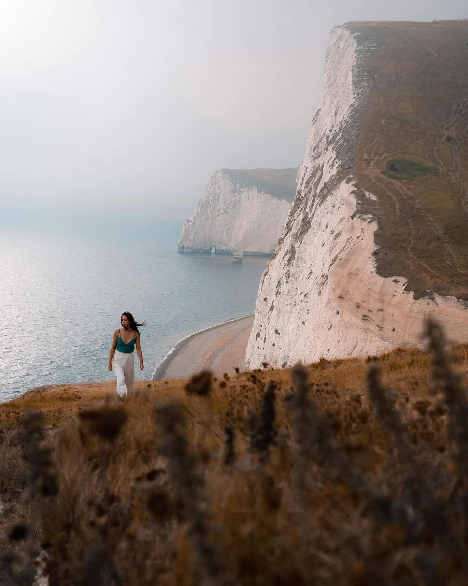
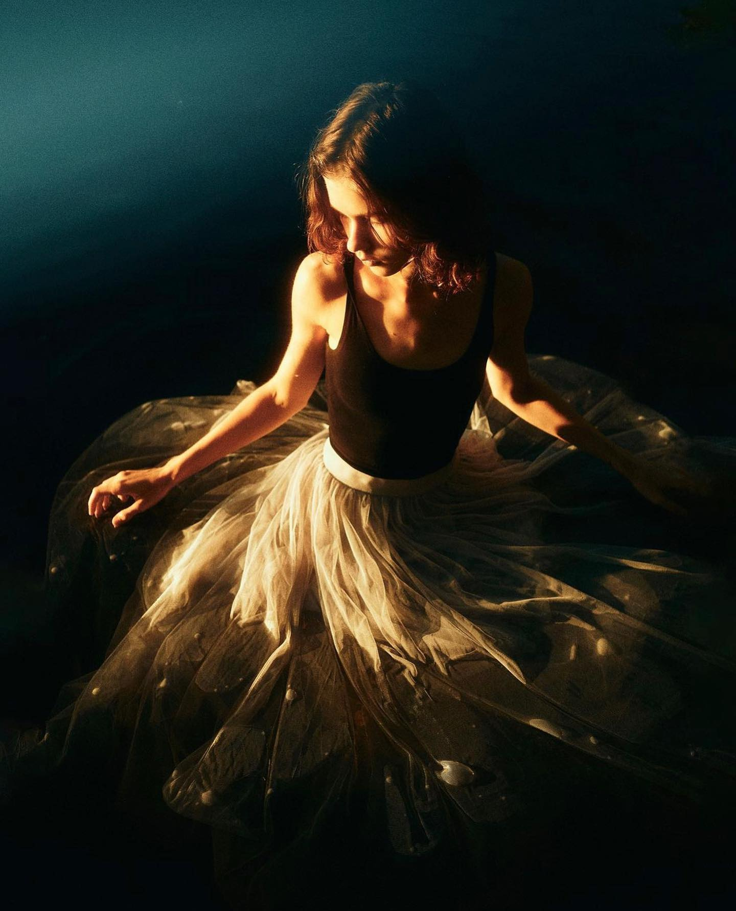

|
Дорогой творец, Обучение фотографии — это удивительное путешествие в мир изображений, света и эмоций. Каждый кадр, который ты создаешь, является отражением твоего внутреннего мира, твоего видения и твоей души. Каждый снимок, каждый эксперимент с ракурсами и освещением, каждое изучение новой техники — это шаги на пути к совершенству, к раскрытию своего творческого потенциала. Не бойся ошибаться, ведь именно в процессе ошибок мы учимся, растем и развиваемся. Изучай работы великих мастеров фотографии, наблюдай за их композициями, цветовыми решениями и способами передачи эмоций. Вдохновляйся и создавай свои уникальные шедевры, которые будут говорить о тебе и твоем видении мира. Не забывай, что фотография — это не просто нажатие на кнопку камеры, это искусство видеть красоту в простых моментах жизни, воплощать свои мысли и чувства через объектив. Ты — творец своего мира изображений, и только ты можешь придать им уникальный смысл и глубину. Итак, пусть каждый кадр, который ты создаешь, будет отпечатком твоей души, и пусть обучение фотографии станет для тебя не только процессом роста, но и источником бесконечного вдохновения и радости творчества. С уважением, Твой внутренний фотографический гений |

|
|
Основы композицииТворец, научись мастерски владеть основами композиции, чтобы каждое твое произведение стало истинным шедевром. Используй золотое сечение, правило третей, экспериментируй с ракурсами, линиями и цветами. Доверься своему внутреннему видению и создавай удивительные кадры, наполненные гармонией и красотой. Пусть каждая фотография станет отражением твоего таланта и вдохновит других на творчество. Пусть твои работы вдохновляют других. |
ОптикаТворец, научись понимать важность знания свойств различных объективов для твоего творчества. Каждый объектив имеет свои особенности: широкоугольный захватит весь пейзаж, телеобъектив подарит удивительное сжатие перспективы, макро объектив позволит увидеть мир в деталях. Используй свойства объективов с умением, чтобы каждое твое фото стало уникальным произведением искусства, отражающим твою внутреннюю эстетику и видение мира. |

Настройки фотоаппаратаТворец, научись понимать важность знания о настройках фотоаппарата для воплощения своего видения в каждом кадре. Регулируя диафрагму, выдержку и ISO, ты контролируешь свет, глубину резкости и чувствительность камеры. Эти знания помогут тебе передать эмоции, создать атмосферу и зафиксировать мгновения так, как видишь их ты сам. Погрузись в мир настроек, и твои фотографии станут отражением твоего уникального взгляда на мир. |